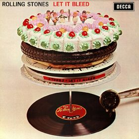

Day 10

The Rolling Stones - You Can't Always Get What You Want - Let-It-Bleed - 1969
我超喜欢开头和结尾的和声。据说Mick Jigger听到Hey Jude的传奇结尾以后获得了灵感。
维基：
"You Can't Always Get What You Want" was recorded on 16 and 17 November 1968 at Olympic Sound Studios in London. It features the London Bach Choir opening the song (the choir opening is only on the album version), highlighting throughout, and bringing it to its conclusion.
I saw her today at the reception
A glass of wine in her hand
I knew she would meet her connection
At her feet was her footloose man
No, you can't always get what you want
You can't always get what you want
You can't always get what you want
But if you try sometime you find
You get what you need
I saw her today at the reception
A glass of wine in her hand
I knew she was gonna meet her connection
At her feet was her footloose man
You can't always get what you want
You can't always get what you want
You can't always get what you want
But if you try sometimes you might find
You get what you need
But I went down to the demonstration
To get your fair share of abuse
Singing, "We're gonna vent our frustration
If we don't we're gonna blow a fifty-amp fuse"
You can't always get what you want
You can't always get what you want
You can't always get what you want
But if you try sometimes well you just might find
You get what you need
I went down to the Chelsea drugstore
To get your prescription filled
I was standing in line with Mr. Jimmy
And man, did he look pretty ill
We decided that we would have a soda
My favorite flavor, cherry red
I sung my song to Mr. Jimmy
Yeah, and he said one word to me, and that was "dead"
I said to him
You can't always get what you want
You can't always get what you want
You can't always get what you want
But if you try sometimes you just might find
You get what you need
You get what you need, yeah, oh baby
I saw her today at the reception
In her glass was a bleeding man
She was practiced at the art of deception
Well I could tell by her blood-stained hands
You can't always get what you want
You can't always get what you want
You can't always get what you want
But if you try sometimes you just might find
You just might find
You get what you need
You can't always get what you want
You can't always get what you want
You can't always get what you want
But if you try sometimes you just might find
You just might find
You get what you need, oh yeah